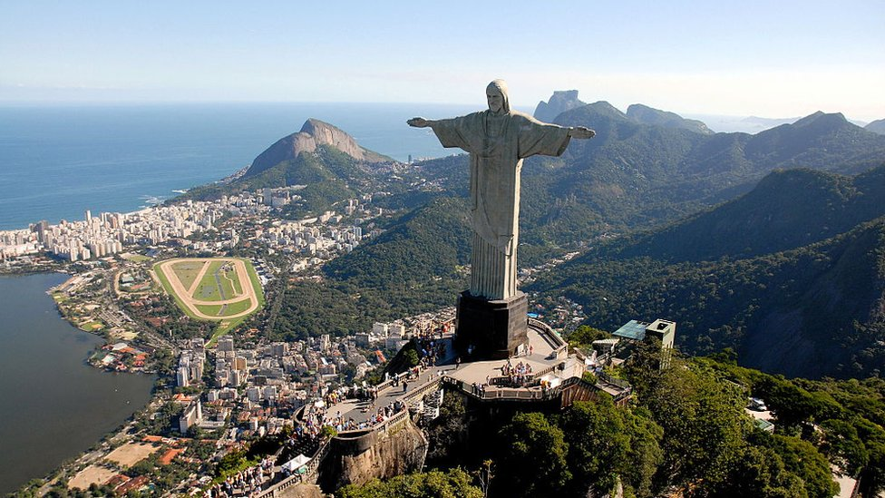

Brazil:
Brazil, officially the Federative Republic of Brazil, is the largest country in both South America and Latin America. At 8.5 million square kilometers (3,300,000 sq mi) and with over 211 million people, Brazil is the world's fifth-largest country by area and the sixth most populous. Its capital is Brasília, and its most populous city is São Paulo. The federation is composed of the union of the 26 states and the Federal District. It is the largest country to have Portuguese as an official language and the only one in the Americas; it is also one of the most multicultural and ethnically diverse nations, due to over a century of mass immigration from around the world; as well as the most populous Roman Catholic-majority country.
Bounded by the Atlantic Ocean on the east, Brazil has a coastline of 7,491 kilometers (4,655 mi). It borders all other countries in South America except Ecuador and Chile and covers 47.3% of the continent's land area. Its Amazon basin includes a vast tropical forest, home to diverse wildlife, a variety of ecological systems, and extensive natural resources spanning numerous protected habitats. This unique environmental heritage makes Brazil one of 17 megadiverse countries, and is the subject of significant global interest, as environmental degradation through processes like deforestation has direct impacts on global issues like climate change and biodiversity loss.
Brazil was inhabited by numerous tribal nations prior to the landing in 1500 of explorer Pedro Álvares Cabral, who claimed the area for the Portuguese Empire. Brazil remained a Portuguese colony until 1808 when the capital of the empire was transferred from Lisbon to Rio de Janeiro. In 1815, the colony was elevated to the rank of kingdom upon the formation of the United Kingdom of Portugal, Brazil and the Algarves. Independence was achieved in 1822 with the creation of the Empire of Brazil, a unitary state governed under a constitutional monarchy and a parliamentary system. The ratification of the first constitution in 1824 led to the formation of a bicameral legislature, now called the National Congress. The country became a presidential republic in 1889 following a military coup d'état. An authoritarian military junta came to power in 1964 and ruled until 1985, after which civilian governance resumed. Brazil's current constitution, formulated in 1988, defines it as a democratic federal republic. Due to its rich culture and history, the country ranks thirteenth in the world by number of UNESCO World Heritage Sites.
Brazil is a regional and middle power, and is also classified as an emerging power. It is considered an advanced emerging economy, having the twelfth largest GDP in the world by nominal, and eighth by PPP measures, the largest in Latin America. As an upper-middle income economy by the World Bank and a newly industrialized country, Brazil has the largest share of global wealth in South America and it is one of the world's major breadbaskets, being the largest producer of coffee for the last 150 years. However, the country maintains noticeable amounts of corruption, crime and social inequality. Brazil is a founding member of the United Nations, the G20, BRICS, Mercosul, Organization of American States, Organization of Ibero-American States and the Community of Portuguese Language Countries.